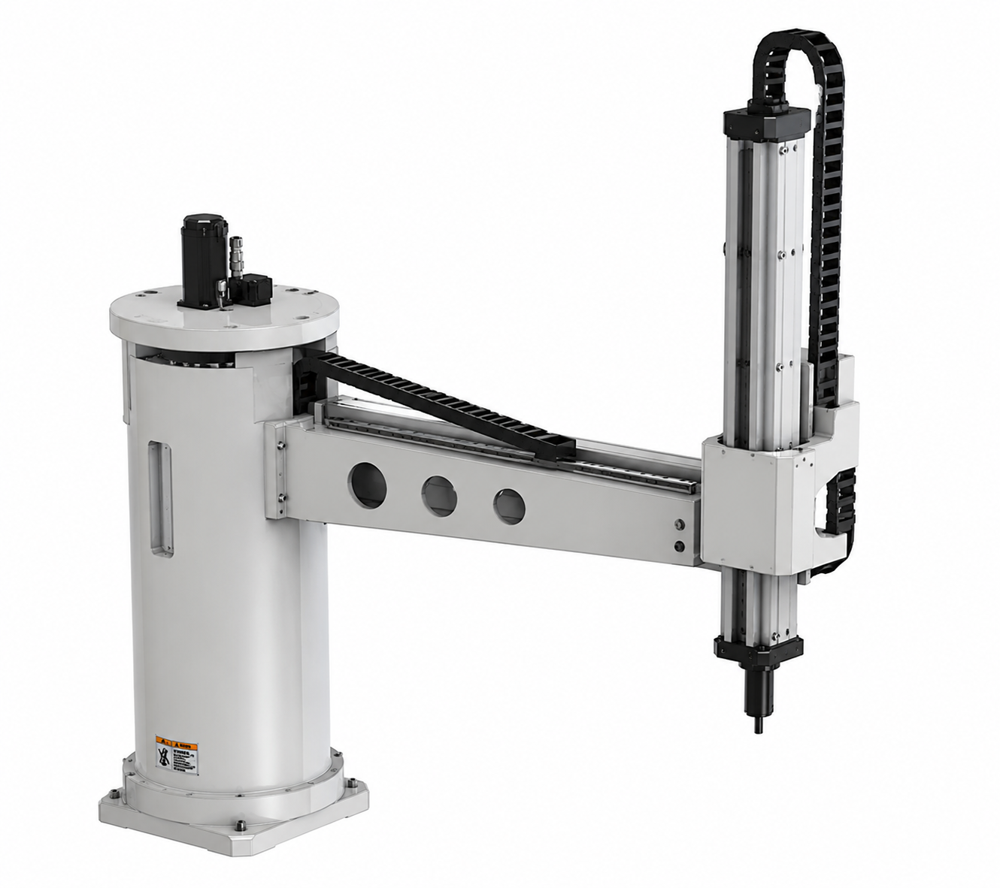
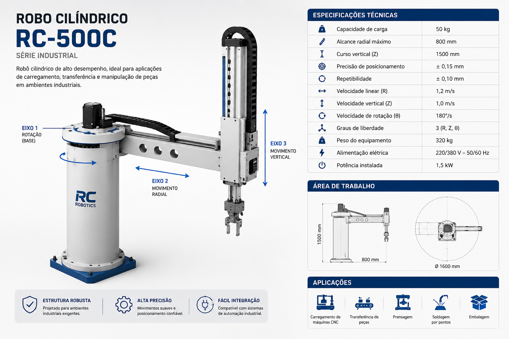
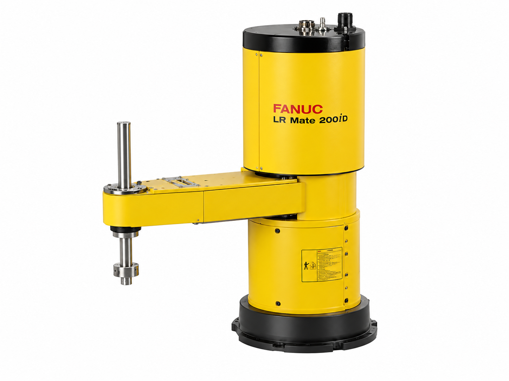
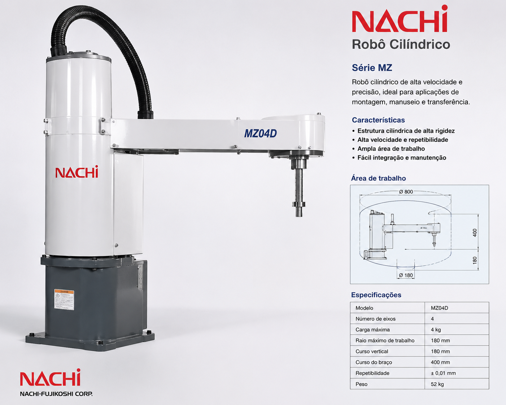
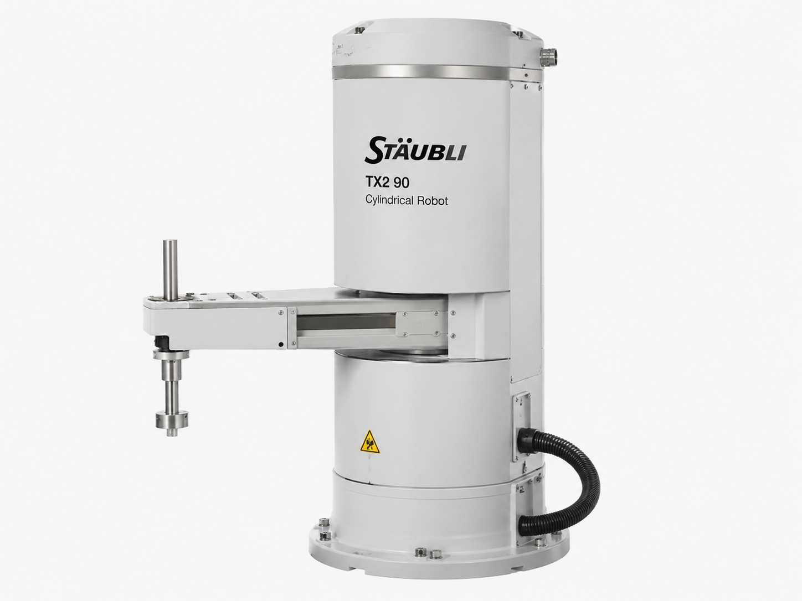

O robô cilíndrico é um tipo de robô industrial que possui movimentos lineares e rotativos, permitindo operações em um espaço de trabalho cilíndrico. Sua estrutura composta por eixos que se movem em linhas retas e rodam em torno de um eixo central, proporcionando uma ampla gama de movimentos, sendo amplamente utilizado em aplicações que exigem precisão e repetibilidade em ambientes industriais.


O robô cilíndrico é um manipulador industrial cuja movimentação é baseada em coordenadas cilíndricas, combinando um movimento de rotação da base com deslocamentos lineares nos eixos radial e vertical. Essa configuração permite que o robô alcance diferentes posições dentro de um espaço de trabalho em formato cilíndrico, oferecendo boa precisão, repetibilidade e simplicidade de operação. Por apresentar uma estrutura robusta e eficiente, é amplamente utilizado em aplicações como carregamento e descarregamento de máquinas, transferência de peças, usinagem, soldagem, prensagem e processos de embalagem. Além disso, o robô cilíndrico pode ser integrado a sistemas de automação e tecnologias da Indústria 4.0, permitindo comunicação com máquinas CNC, monitoramento em tempo real e otimização dos processos produtivos por meio de sensores inteligentes e manutenção preditiva.
Grandes empresas da automação industrial desenvolvem robôs cilíndricos para aplicações que exigem rapidez, precisão e confiabilidade. Esses equipamentos são amplamente utilizados em processos de montagem, manipulação de peças, carregamento de máquinas e sistemas Pick and Place.

Reconhecida mundialmente por suas soluções em automação industrial, a FANUC desenvolve robôs de alto desempenho voltados para operações de movimentação, montagem, inspeção e manipulação de materiais, oferecendo elevada precisão e confiabilidade.

A Nachi-Fujikoshi é uma fabricante japonesa especializada em robótica industrial, oferecendo robôs robustos para aplicações de carregamento de máquinas, usinagem, transferência de peças e automação de linhas de produção.

A Stäubli destaca-se pela fabricação de robôs industriais de alta precisão, projetados para aplicações que exigem velocidade, repetibilidade e confiabilidade, como montagem eletrônica, manipulação de componentes e processos automatizados.